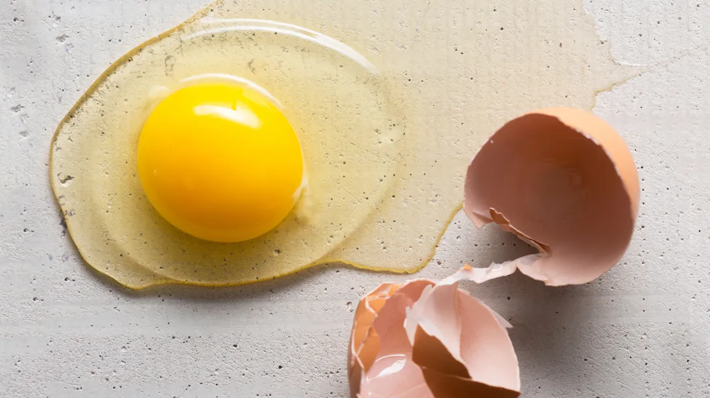
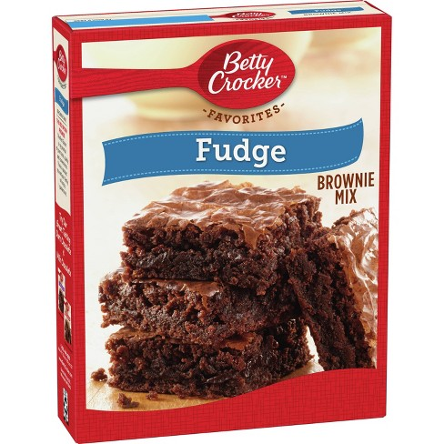
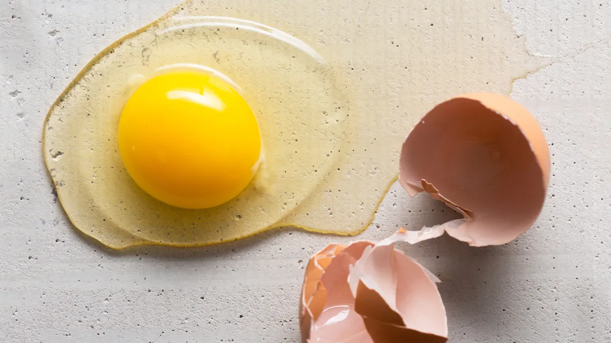
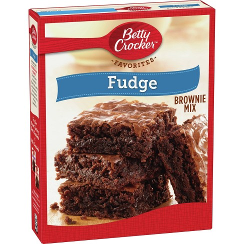
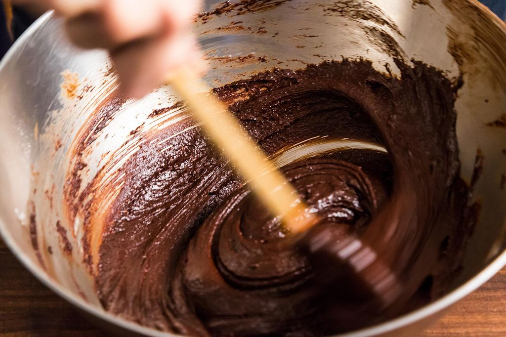
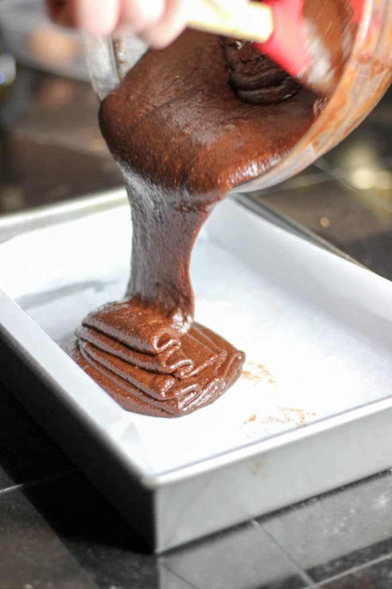
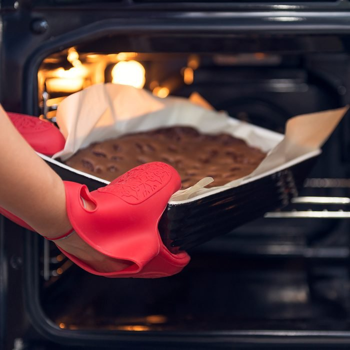
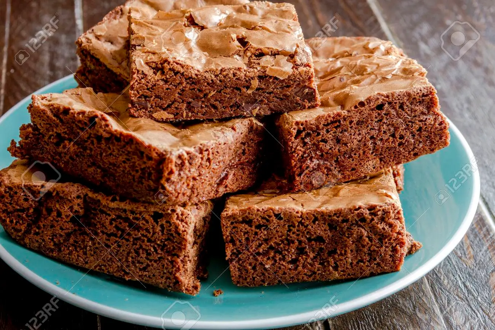

Why I Chose Brownies?
I chose brownies because they are a very nostalgic food that brings back good memories with framily, friends, and holidays. This food brings joy to me due to the fact Betty Crocker was introduced to me by my grandma.
Indredients
3 tblsp water, 1/2 cup vegetable oil, 2 eggs, 9x9 pan, and Betty Crocker Fudge Bronwie Mix
 



Steps
First Step: Grab all ingredients needed as instructed on the box. Second Step: Preheat oven to 350 degrees. While waiting on oven to preheat, grease the bottom of the pan and start mixing together all ingredients. Third Step: Pour brownie mixture into the pan. Fourth Step: Bake for 40-42 minutes Fifth Step: Lastly pull brownies out of the oven and let them sit to cool. Now your brownies are ready to be served!
   Allergies
Wheat, egg, milk, soy
Where You Can Find this Product
You can find this product at your local grocery store: kroger, walmart, publix